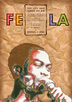

<body bgcolor="#FFFFFF" text="#000000" link="#0000FF" vlink="#CC0000" alink="#CC0000"><center><hr width="350" size="1" align="center" noshade>A profile of the outspoken Nigerian musician who popularized Afropop<hr width="350" size="1" align="center" noshade><p><a href="https://cdcshoppingcart.uchicago.edu/Cart/ChicagoBook.aspx?ISBN=9781566397643&&PRESS=temple" target="_top">Buy this book!</a> | <a href="https://cdcshoppingcart.uchicago.edu/Cart/Cart.aspx?PRESS=temple" target="_top">View Cart</a> | <a href="https://cdcshoppingcart.uchicago.edu/Cart/Cart.aspx?PRESS=temple" target="_top">Check Out</a></p><p></p></center><!--none//--><h1>Fela</h1>
<H2>The Life and Times of an African Musical Icon</H2>
<h3>Michael E. Veal</h3>
<P>cloth 1-56639-764-2 $84.50, May 00, <FONT COLOR=#990033>Out of Stock Unavailable</FONT>
<br>paper 1-56639-765-0 $43.95, May 00, <FONT COLOR=#990033>Available</FONT>
<br>Electronic Book 1-43990-768-4 $43.95 <FONT COLOR=#990033>Out of Stock Unavailable</FONT>
<BR> 352 pp
7x10
33&nbsp;halftones
</P><BLOCKQUOTE><I>"</I>Fela: The Life and Times of an African Musical Icon<I> is both timely and bold.... [It] has the potential of becoming a classic of African biography. It is written in an accessible style, rich in local color and musically informed.... Veal's study is not the first book written of Fela. But it is by far the best."</I>
<br>&#151<b>Veit Erlman</b>, Chair of Music History in the School of Music, University of Texas, Austin<I></I></BLOCKQUOTE>
<P>Musician, political critic, and hedonist, international superstar Fela Anikulapo-Kuti created a sensation throughout his career. In his own country of Nigeria he was simultaneously adulated and loathed, often by the same people at the same time. His outspoken political views and advocacy of marijuana smoking and sexual promiscuity offended many, even as his musical brilliance enthralled them. In his creation of afrobeat, he melded African traditions with African-American and Afro-Caribbean influences to revolutionize world music.
<P>Although harassed, beaten, and jailed by Nigerian authorities, he continued his outspoken and derisive criticism of political corruption at home and economic exploitation from abroad. A volatile mixture of personal characteristics&#151charisma, musical talent, maverick lifestyle, populist ideology, and persistence in the face of persecution&#151made him a legend throughout Africa and the world. Celebrated during the 1970's as a musical innovator and spokesman for the continent's oppressed masses, he enjoyed worldwide celebrity during the 1980's and was recognized in the 1990's as a major pioneer and elder statesman of African music. By the time of his death in 1997 from AIDS-related complications, Fela had become something of a Nigerian institution.
<P>In Africa, the idea of transnational alliance, once thought to be outmoded, has gained new currency. In African-America, during a period of increasing social conservatism and ethnic polarization, Africa has re-emerged as a symbol of cultural affirmation. At such a historical moment, Fela's music offers a perspective on race, class, and nation on both sides of the Atlantic. As Professor Veal demonstrates, over three decades Fela synthesized a unique musical language while also clearing&#151if only temporarily&#151a space for popular political dissent and a type of counter-cultural expression rarely seen in West Africa. In the midst of political turmoil in Africa, as well as renewal of pro-African cultural nationalism throughout the diaspora, Fela's political music functions as a post-colonial art form that uses cross-cultural exchange to voice a unique and powerful African essentialism.
<BR>&nbsp;<h2>Excerpt</h2><P>Excerpt available at <a href="http://www.temple.edu/tempress">www.temple.edu/tempress</a></p>
<BR>&nbsp;<h2>Reviews</h2>
<p><i>"I saw Fela perform in Nigeria nearly 30 years ago, and it remains my most powerful musical experience to this day. Michael Veal has written a fully comprehensive book on the life, music, and times of Nigeria's outstanding pop star, one which brings this complicated and controversial man back to life. This book is essential reading for anyone interested in Fela."</i>
<br>&#151<b>Dr. John Collins</b>, Professor of Music at University of Ghana, Legon, and author of <I>Musicmakers of West Africa and West African Pop Roots</I>
<p><i>"[Veal] has demonstrated a tremendous command of the literature, not merely on Fela and the Nigerian music scene, but the Nigerian context in which Fela grew and matured, the Afro-Diasporic musical context, and the kind of global/world music framework that has yet to appreciate Fela's contribution. This is more than a biography of one of Nigeria's most famous sons, it is a biography of an era, from the kind of pre-independence political and aesthetic culture of an anti-colonial elite through the trials and tribulations of the dictatorships of the late '80s and all of the '90s. Veal's command of the material is impressive, his knowledge of the music and music scene irreplaceable, and his contextualization of Fela's life essential to understanding the role that his music played."</i>
<br>&#151<b>William Eric Perkins</b>, editor of <I>Droppin' Science</I> and Senior Research Scholar with the African American Literacy and Culture Project
<p><I>"This is a well-written, well-researched, and highly entertaining biography."</I>
<br>&#151<b><I>MultiCultural Review</I></b>
<p><i>"...a fascinating and thorough contextual biography...in his compelling book, Veal has produced a distinctive and thoroughly engaging analysis of afrobeat and its historical, ideological and material underpinnings. He is to be congratulated."</i>
<br>&#151<b><i>Popular Music</i></b>
<p><i>"This exhaustive and objective profile, written by a Yale ethnomusicology professor, examines the Nigerian superstar's life and work from 1938 to his death in 1997....Veal has taken on the staggering task of portraying a musician/politician/rebel, and he executes it well."</i>
<br>&#151<b><i>Publishers Weekly</i></b>
<p><i>"...the most in-depth portrait so far."</i>
<br>&#151<b><i>The Utne Reader</i></b>
<p><i>"Michael Veal's book presents a vibrant multifaceted portrait of, as the subtitle explains, 'an African musical icon'... With its exhaustive discography, archival photos, and vivid descriptions of Fela's life in performance&#151both on stage and off&#151this book provides a fantastic primer on one of the more intriguing musical personalities of the twentieth century."</i>
<br>&#151<b><i>Ethnomusicology</i></b>
<BR>&nbsp;<h2>Contents</h2><P>
<p>Acknowledgments
<br>1. Introduction: "Abami Eda"
<br>2. Abeokuta (1938-1957)
<br>3. "Gentleman" (1958-1970)
<br>4. "African Message" (1970-1974)
<br>5. "The Black President" (1974-1979)
<br>6. "A Serious Cultural Episode" (1979-1992)
<br>7. "Fear Not for Man" (1985-1997)
<br>8. Conclusion: "Look and Laugh"
<br>Appendix: Koola Lobitos, Nigeria 70, Afrika 70, and Egypt 80 Personnel
<br>Notes
<br>Bibliography
<br>Discography
<br>Index
</P><BR>&nbsp;<H2>About the Author(s)</H2>
<table><tr><td valign="top"><img src="/tempress/authors/1475_au.gif" height="90" width="75"></td><td width="100%" valign="middle"><p><B>Michael E. Veal</B> is Assistant Professor of Ethnomusicology at Yale University. In addition to being thoroughly grounded in the literature on Nigeria, African music, and the world music scene, he played as a guest saxophonist with Fela and his band Egypt 80, and has conducted interviews with Fela himself, and with his colleagues and other Nigerian musicians.</P></td></tr></table>
<BR><H2>Subject Categories</H2>
<p><A HREF="/tempress/general.html" TARGET="_top">General Interest</a>
<BR><A HREF="/tempress/music.html" TARGET="_top">Music and Dance</a>
<BR><A HREF="/tempress/african.html" TARGET="_top">African American Studies</a>
</p>
<p align="center"><a href="https://cdcshoppingcart.uchicago.edu/Cart/ChicagoBook.aspx?ISBN=9781566397643&&PRESS=temple" target="_top">Buy this book!</a> | <a href="https://cdcshoppingcart.uchicago.edu/Cart/Cart.aspx?PRESS=temple" target="_top">View Cart</a> | <a href="https://cdcshoppingcart.uchicago.edu/Cart/Cart.aspx?PRESS=temple" target="_top">Check Out</a></p><p><font face="Arial" size="1"><a href="copyright.html" onMouseOver="window.status='Web Copyright Policy';return true;" onMouseOut="window.status=''" title="Web Copyright Policy">&copy;</a> 2015 <a href="http://www.temple.edu" target="new" onMouseOver="window.status='Link to Temple University home page';return true;" onMouseOut="window.status=''" title="Link to Temple University home page">Temple University</a>. All Rights Reserved. http://www.temple.edu/tempress/titles/1475_reg.html</font></p>